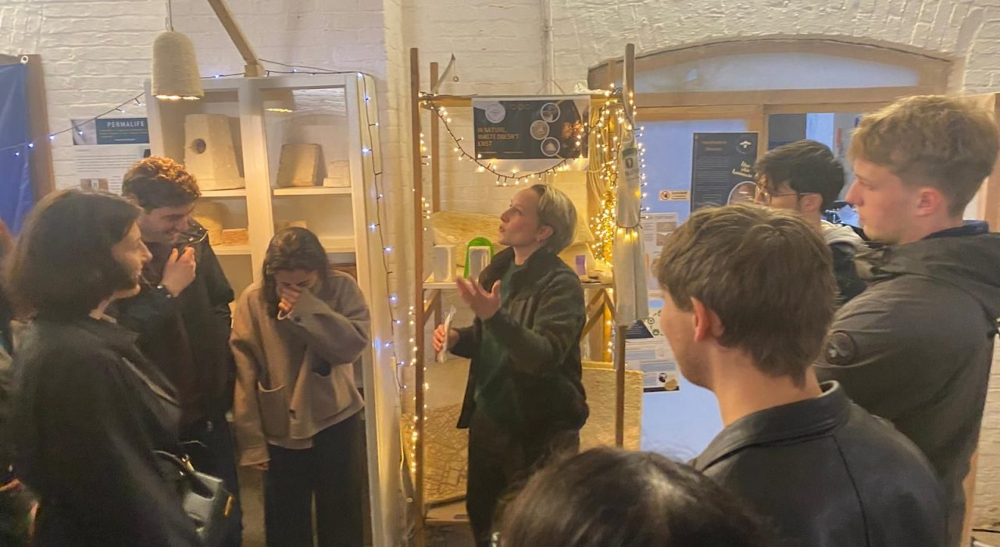

Brussels, 2025
Parliament, repair, soil and bio-based industry
In April 2025, the Chair traveled again to Brussels. At the European Parliament, students explored the legislative tools shaping circular policy. Visits to Repair Together and cityfab 1 showed how community repair and digital fabrication extend product lifecycles. BC Materials transforms excavated urban soils into construction materials; CBE-JU highlighted public–private partnerships in circular bio-based industries. Permafungi and The Upcycling Lab turned waste streams — mushroom substrates, discarded textiles — into products.